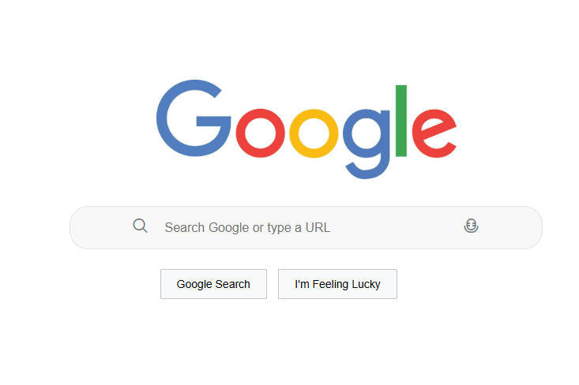
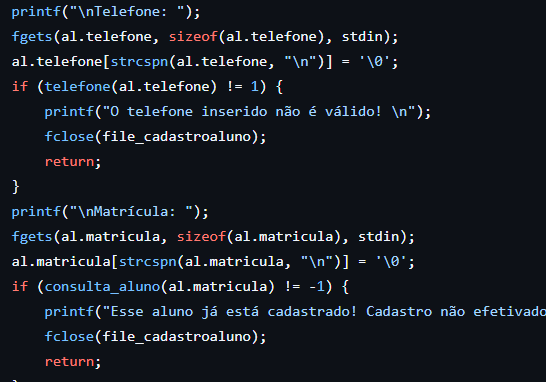

um pouco sobre mim
cientista da computação em formação
palestrante nas horas vagas
entusiasta em ciência de dados
estudante de iniciação científica (PIBIC)
desenvolvedora web
habilidades

JavaScript
Utilizei JavaScript para adicionar interatividade e criar comportamentos dinâmicos em aplicações web.
projetos importantes
concluídos

Stonks Viewer
Aplicação web que utiliza Python e React para fornecer análises de ações baseadas em dados históricos e aprendizado de máquina.

Python / Excel
Aplicação que utiliza Python para análises de palavras originais e derivadas a partir de comparações.


Administração de dados
Projeto em C para reforçar manipulação de arquivos e dados acadêmicos.
em desenvolvimento
AI StonksViewer
Versão melhorada do Stonks Viewer.
O.R.D.E.R
Loja online.
Terrinha
Game mobile educacional para crianças com dislexia